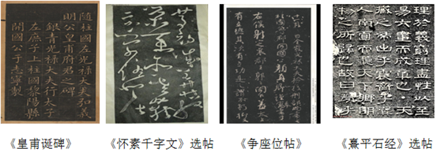

2019年北京市中考语文试题 · 基础选择题 第1题
1．（15分）学校开展“丝绸之路”历史文化主题学习活动，请你完成下列任务。
（1）下面是一位同学找来的一段介绍“丝绸之路”的文字。阅读这段文字，完成①﹣②题。
公元前119年，张骞奉汉武帝之命，率300多人的使团，带着牛羊、丝绸等物品出使西域。此后，汉朝和西域的使者开始相互往来。商人们载着汉朝的丝绸、漆器等货物，从长安（今西安）穿过河西走廊，经西域运往中亚、西亚，再转运到欧洲；又把西域的物产和奇珍异宝运到中原。这条①通欧亚的陆上交通道路，就是载入史册的“丝绸路”。后来，汉朝又开辟多条海上航线，逐渐形成了“海上丝绸之路”。二者文相辉映、共同谱写了人类交融互鉴的历史篇章。近年来，中国提出的“一带一路”倡议，就是为②续丝绸之路的辉煌历史、开创灿烂未来而贡献的卓越智慧。
①依次给这段文字中加点的字注音，全都正确的一项是 。
A．载（ zǎi） | 载（zài） |
B．载（ zài） | 载（zài） |
C．载（ zài） | 载（zǎi） |
D．载（zǎi） | 载（zǎi） |
②在这段文字横线处填入汉字，全都正确的一项是 。
（3）一位同学准备去做“文化记忆﹣﹣中国丝绸之路非物质文化遗产展”，的志愿讲解员，他拟写了下面的一段讲解词。在【甲】【乙】两处分别填入标点符号，最恰当的一项是 。
本次展览展示了丝绸之路沿线13个省、自治区、直辖市的重点非物质文化遗产项目【甲】展品的年代跨越久远，有西汉时期的铜鼓，也有明清时期的瓷器；展品的种类十分丰富，包括乐器、瓷器、织锦、刺绣等；展品涉及21个民族，表现了这些民族丰富的非遗文化【乙】展览中的所有展品，既体现了精湛的技艺，也具有重要的历史和艺术价值。
A．【甲】句号 | 【乙】句号 |
B．【甲】句号 | 【乙】分号 |
C．【甲】冒号 | 【乙】句号 |
D．【甲】冒号 | 【乙】分号 |
（5）下面是“丝绸之路国家博物馆文物精品展”前言中的一段话。结合语境，在横线处填入语句，最恰当的一项是 。
陆上丝绸之路沿线国家的展品中，既有俄罗斯国家历史博物馆收藏的叶形矛头，也有哈萨克斯坦国家博物馆收藏的黄金武士；海上丝绸之路沿线国家的展品中，既有柬埔寨国家博物馆收藏的铜鼓，也有日本东京国立博物馆收藏的突线钮铜铎。展览中的精美文物众多，举不胜举。 。
【甲】丝绸之路沿线各国充分体现了这些精美文物在文化艺术方面融合互鉴、交汇碰撞的广度和深度
【乙】丝绸之路沿线各国文化艺术交流的广度和深度，充分体现在这些精美文物的融合互鉴、交汇碰撞之中
【丙】这些精美文物充分体现了丝绸之路沿线各国在文化艺术方面融合互鉴、交汇碰撞的广度和深度
（6）学校微信公众号负责人准备做一期与本次活动相关的推送，向同学们征集图文资料。阅读同学们的来稿，完成①﹣﹣③题。
①西安是丝绸之路的起点，西安碑林是中国书法的宝库。如图所示是一位同学收集的四幅西安碑林书法图片。对这四幅书法作品的欣赏，不恰当的一项是 。

A．《皇甫诞碑》的字体属于楷书，形体方正，刚健坚劲。
B．《怀素千字文》的字体属于草书，连绵回绕，自由飘逸。
C．《争座位帖》的字体属于行书，结构匀整，端庄通畅。
D．《熹平石经》的字体属于隶书，体态宽扁，古朴典雅。
②下面是四位同学分别写下的参观感受，其中修辞方法或词语使用不恰当的一项是 。
A．从路线示意图上看，丝绸之路是一条迷人的曲线，扣人心弦，使人赞叹，感人肺腑。
B．每当想到张骞、郑和、马可•波罗等奔波于丝绸之路的先贤，我的敬意就油然而生。
C．丝绸之路沿线国家的文物精品，虽然经过千百年岁月，却依然像璀璨的珍珠，弥足珍贵。
D．“一带一路”的伟大倡议，必将在古老的丝绸之路上奏响和平、繁荣、文明的新乐章。
③下面是一位同学写的一副对联，他不能确定横线处应填入的词语。你认为在上下联横线处填入词语，最恰当的一项是 。
驼铃①，古道徐行，一路丝绸连②；
波涛③，汪洋横渡，千年文明耀④。
A．①滚滚 | ②欧亚 | ③悠悠 | ④乾坤 |
B．①滚滚 | ②乾坤 | ③悠悠 | ④欧亚 |
C．①悠悠 | ②欧亚 | ③滚滚 | ④乾坤 |
D．①悠悠 | ②乾坤 | ③滚滚 | ④欧亚 |